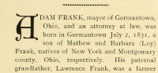

Profile of Adam Frank (b. 1831) from historical Montgomery county (Ohio) book in 1897
Profile of Adam Frank (b. 1831) from historical Montgomery county (Ohio) book in 1897.
Citation
"Adam Frank," Centennial portrait and biographical record of the city of Dayton and of Montgomery county, Ohio. 1897 (A. W. Bowen & Co. Logansport, IN), pages 971-972, accessed on the Internet Archive at https://archive.org/stream/centennialportra00cono#page/971/mode/1up.
Transcript of Profile [paragraphs, emphasis, & lists added]
[German Township]
ADAM FRANK, mayor of Germantown, Ohio, and an attorney at law, was born in Germantown July 2, 1831, a son of Mathew and Barbara (Loy) Frank, natives of New York and Montgomery county, Ohio, respectively.
His paternal grandfather, Lawrence Frank, was a farmer of New York state, and his maternal grandfather, George P. Loy, was a native of Maryland and a pioneer of German township, Montgomery county, Ohio, where he cleared and improved a farm; in later life he retired to Germantown, and died there.
Mathew Frank was a pioneer shoemaker of Germantown, followed that vocation all his life, and died at Germantown in 1869, in his seventieth year [born around 1799].
His children [Adam and his siblings, possibly listed in birth order] were
- Mary (Mrs. Daniel Bussard),
- George,
- Adam [subject of this article],
- John C,
- William H. and
- Nancy J. (Mrs. Holcomb Snyder).
Adam Frank passed his youth in his native town and was graduated from the Germantown academy. During his minority he learned the shoemaker's trade, which he followed for twenty-five years, and during that period studied law. He was admitted to the bar in the early 'seventies [around 1870-1875], and has since been in the active practice of his profession at Germantown, where he has been prominent in the settlement of estates.
Mr. Frank has been twice married;
- his first wife was Nancy [Lucas], daughter of Israel and Catherine (Catrow) Lucas, of Wapakoneta, Ohio; to this union was born one daughter — Mary C., now deceased.
- His second wife was Mrs. Vandalena L. (Hinkle) Stirewalt, of Germantown.
Mr. Frank, in his fraternal relations, is a thirty-second degree Mason, and is also past grand high priest of the grand encampment of Odd Fellows.
- He has been secretary of Friendship lodge, I. O. O. F., No. 21, of Germantown, since December, 1857, a period of thirty-nine consecutive years, and has filled all its various offices.
- He is a charter member of canton Frank, of Germantown, named in his honor, and organized March 28, 1888.
- He organized the first beautiful Rebekahwork, put on the floor February 23, 1883, by Grace Rebekah lodge, No. 39, Germantown, and which has since developed in various forms throughout the United States.
- He has been representative to the grand lodge of Ohio for ten years, and of the grand encampment for about the same period; also district deputy grand master and district deputy grand patriarch for several years.
- In the Masonic fraternity he has been master of the Germantown lodge, No. 257, for twenty-seven years.
He has served as
- justice of the peace of German township for thirty-seven years;
- mayor of Germantown, at intervals, for twenty-six years;
- clerk of the school board for twenty-five years;
- notary public for twenty-five years;
- secretary of the Germantown cemetery; and
- president of the Germantown Fire company for over thirty years.
In politics Mr. Frank is a republican. In his societary connections, few men have attained positions so high in the various orders to which he belongs as has Mr. Frank, and this fact alone shows not only the caliber and strength of his mentality, but also the high respect in which he is held by his fellow-men. In his profession he stands in the foremost rank, and in all the relations of life has proved his worth as an individual and his value to society.
Additional text from non-Internet Archive transcript
Another online transcript of this source has additional information, not found in the Internet Archive version of this book. For reference and clues only, I've copied the extra, unverified details from their transcript below.
Extra details (from unknown source)
- A few years after coming to Ohio, he [Adam's father, Matthew] was married to Miss Barbara Loy
- [Adam's parents had] six children, four of whom are now living.
- Matthew died in 1867, and his wife in 1877, both dying, as they had lived, faithful members of the U. B. Church
- He was married March 7, 1853, to Miss Nancy A. Lucas, a native of this county, born in 1830
- Mr. Frank was again married, in 1874, to Mrs. Vanda L. Stirewalt, widow of the Rev. Julius L. Stirewalt, who is a sincere member of the Lutheran Church
- In 1865, [Adam] was elected as a Justice of the Peace for German Township,
- Elected in 1864 Mayor of Germantown, which position he now occupies.
- Subsequently, was chosen Township Clerk, and a member of the Board of Education,
- About this time, his duties as a public servant and his ambition to understand more thoroughly the laws of the land induced him to abandon his trade and turn his whole attention to reading law; was finally admitted to the bar in 1870, and has since practiced his profession.